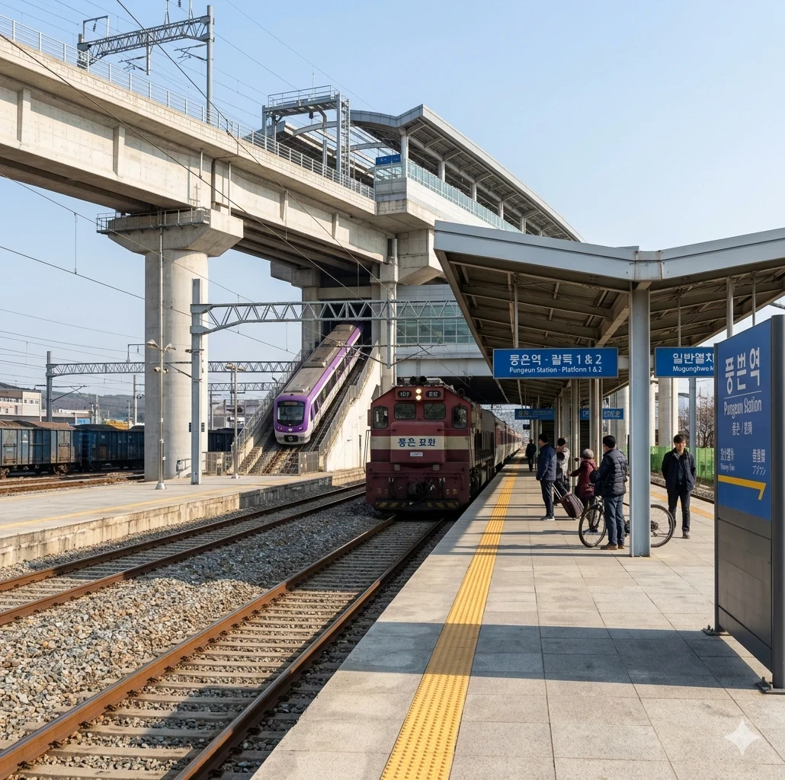
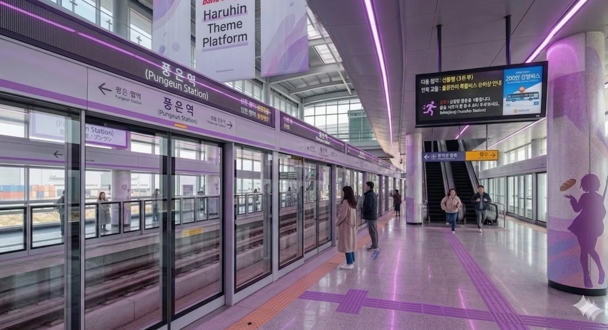

가원구 물류와 교통의 새로운 중심.
덕빈북도 빈주시 가원구 풍은동에 위치한 상빈선과 빈주 도시철도 2호선의 철도역이다.
과거에는 화물 취급이 주력인 작은 역이었으나, 인근에 풍은물류단지가 조성되고 2025년 빈주 도시철도 2호선이 개통되면서 환승역으로 발돋움하였다. 현재 2호선의 시점역 역할을 하고 있으며, 역 바로 옆에 2호선 열차들의 보금자리인 풍은차량사업소가 위치해 있어 명실상부한 철도교통의 핵심 요충지로 거듭났다.
1967년 상빈선 개통과 함께 영업을 시작했다. 오랫동안 여객보다는 화물 수송 비중이 높았으나, 2010년대 들어 가원구 도시 개발과 함께 여객 수요가 증가하였다.
2025년 12월 1일 빈주 도시철도 2호선이 개통되면서 빈주 시내와의 접근성이 획기적으로 개선되었고, 명실상부한 가원구 서부의 교통 거점으로 자리 잡았다.

일반열차와 도시철도 역사가 통합된 형태이나, 승강장 위치는 층이 다르다.
지상 1층: 상빈선 승강장 (1면 2선 섬식) - 화물열차 대피선이 함께 있다.
지상 2층: 빈주 도시철도 2호선 승강장 (2면 2선 상대식) - 고가 형태로 지어졌다.
※ 신중 방면 반대편(시종착 방향) 선로는 지상에 위치한 풍은차량사업소로 연결되는 아찔한 급구배 인입선으로 이어져 있다.

| 시종착 | |||
| 하행 승강장 | ㅣ | ㅣ | 상행 승강장 |
| ↓ 민산 | |||
| 연도 | 상빈선 | 2호선 | 총합 | 비고 |
|---|---|---|---|---|
| 2024년 | 520명 | - | 520명 | |
| 2025년 | 850명 | 집계 중 | 집계 중 | 2호선 개통 |